|
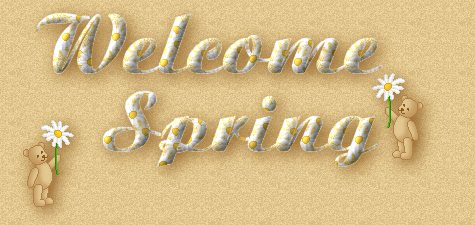
*Nothing on this page is available for request or download. Please use the links provided.*
We're anxiously waiting for Spring!
In the meantime...here's some adorable adoptables
to pass the time as we wait. :)
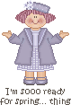
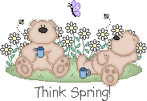 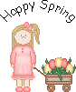
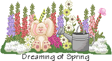  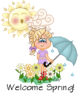
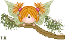 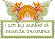
And these adorable little ones below are from Leo's Corner! :)
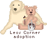
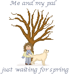 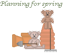 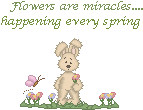
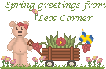
|
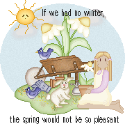
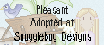
|
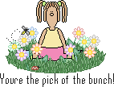
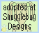
|
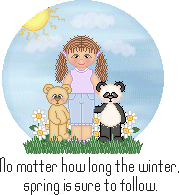
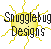
|
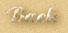 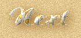
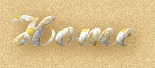
"Daisy Bear" created by following a tutorial from: Moe's Go's @ Tuts
Backgrounds, banner, buttons created by My Mom
|